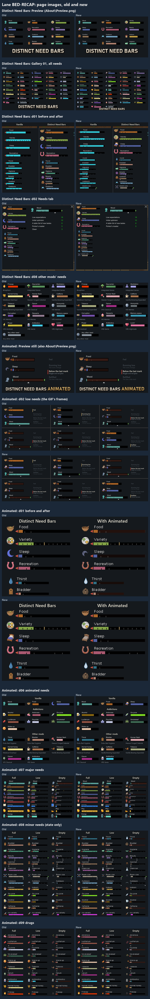

Both Workshop pages with the bed
2026-11-04. Not linked from any Workshop page. Nothing here is on Steam yet.
The whole page drafts
Distinct Need Bars (1.1.1): the description with "a bed for Sleep", the new before-and-after, Needs tab and other-mods images, the preview, and gallery 01, which now shows all 42 needs in nine rows (it answers your earlier question about the DLC needs missing from it).
Distinct Need Bars: Animated (0.2.1): the preview and top GIF with the bed, and the grids with the bed and the redrawn Learning, Psychite and Wake-up. It now says it needs Distinct Need Bars 1.1.1 or later, since 1.1.0 still draws the moon at full.
Every changed image, old above new
A long sheet: each image that changed, the published one and the new one. Every Sleep cell is now the bed.
